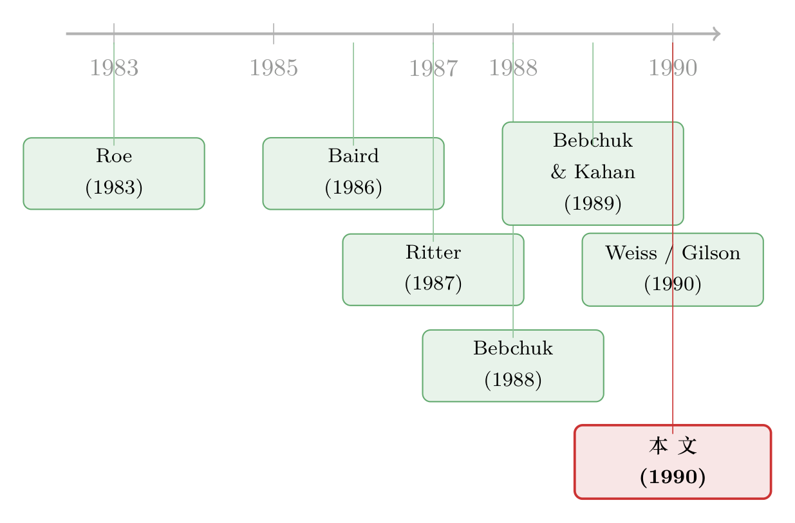

拍卖能把东西卖到最高价，可破产偏偏不用拍卖
本文读的是 Easterbrook (1990, Journal of Financial Economics)：拍卖能把资产配置到出价最高的人手里，可美国的公司破产偏偏不拍卖，而是让法官「估」一个价、再按这个价把利益分下去。很多人据此断言破产是低效的。这篇只有六页半的小文章却反问：这个结论根本不成立——「估错价」的代价，未必比「办一场拍卖」的代价更大；而一个能长久存活下来的法律制度，要么是因为它有效率，要么是因为它在替某个有政治势力的群体转移财富。既然在破产里找不到被转移的财富，那剩下的解释就只有一个：它是有效率的。
1 一个让人不舒服的对照
先讲一个几乎写进每一本金融学教科书的常识：拍卖 (auction) 能把资源配置到「出价最高的人」手里，而出价最高，通常意味着他能让这块资产产生最大的价值。卖一幅画、卖一块海上油田、卖一家被要约收购的公司——投行整天在做的，就是替整家公司张罗拍卖，最后落地成并购、要约收购或杠杆收购。市场是这么运转的，效率也是这么来的。
可是，偏偏有一个地方不这么干：公司破产 (corporate bankruptcy)。
一家公司还不上债、倒下了，按理说最干净的处理方式是：自动冻结 (automatic stay) 先拦住债权人哄抢，然后把这家公司当作「持续经营的整体」(going concern) 拍卖给出价最高的买家，换回一大笔现金，再严格按合同约定的优先级把钱分下去。可现实中的破产程序，是把一位法官请上来，听律师和投资银行家各执一词，然后由这位法官「拍脑袋」给公司资产定个价，再据此把各方的利益份额分下去。
这就尴尬了。你让一个既不是因为「会给资产定价」而被选上来、也不会因为「商业判断太差」而被淘汰掉的法官，去和一群拿真金白银下注、估错了就会破产、估对了就能发财的竞标者比谁定价更准——这听起来简直没法比。难怪 Baird (1986) 会强烈质疑：当一个更便宜的替代方案（拍卖）就摆在手边时，公司破产这套东西到底还有没有存在的意义？
于是结论似乎呼之欲出：破产是低效的，我们应该多用拍卖。
这篇文章的作者身份本身就值得说一句：Frank H. Easterbrook 当时是美国联邦第七巡回上诉法院的法官——也就是说，是一位法官在替「让法官定价」这套制度做辩护，而且用的是经济学的语言。这让全文有一种特别的张力。
2 真正关键的一步：把问题问反过来
接着，一个自然的问题是：如果破产真的这么差，为什么它能存在这么久、而且大家还不肯改？
这篇文章最漂亮的地方，就在于它没有顺着「破产低效」的指控继续往下骂，而是把整个问题【翻了个面】。作者给出了一条贯穿全文的判据：
一个能长久存活的法律制度，之所以能存活，要么是因为它有效率 (efficient)，要么是因为它把财富转移给了某个集中的、有政治影响力的利益集团 (redistribute wealth)。
这其实就是把「制度为什么存在」这个问题，拆成了一道二选一的排除题。法律有时也可能有道德基础，但用道德去解释「公司破产里该用市场估值还是法官估值」，实在牵强。所以剩下的就两条路：要么效率，要么转移。只要能证明破产没有在替谁转移财富，那它就只能是有效率的。
这是一种典型的「反证」思路：不去正面论证破产有多好，而是把所有「破产之所以存在是因为它在坑某些人」的解释，一个一个堵死。
3 「转移财富」这条路，是怎么被堵死的
那么，市场估值 vs. 法官估值，到底有没有在转移财富？谁是赢家、谁是输家？
这里用到了金融学里一个非常核心、却常被破产讨论忽略的直觉：事后 (ex post) 的再分配，并不等于事前 (ex ante) 的再分配——因为价格会调整。
作者举了个极端的假设：假设现行破产法总是格外苛待初级的、无担保的债权 (junior, unsecured debt)，比一个能拍出更高价钱的拍卖规则下他们能拿到的还要少。表面看，这是在「劫贫济富」，把财富从无担保债权人转移给有担保债权人。
但真的是这样吗？并不是。一旦这条规则是【已知】的，无担保债权人会怎么办？他们会提高借钱的要价。于是在整个贷款组合上，他们并不会更糟。真正吃亏的，是那些不得不为更高资本成本买单的「好公司」（以及它们的投资者）。换句话说：
- 事后看，破产案里确实有人吃亏有人占便宜（比如违反绝对优先规则 (absolute priority rule)，会把财富转给次级债的持有人）；
- 但事前看，价格早就把这种预期再分配「定价」进去了，结果是 ex ante 没有任何一方被系统性地转移走财富。
更进一步，作者指出一个常被忽视的事实：资本的供给者，并不会天然地分成「有担保债主」「无担保债主」「股东」这样泾渭分明的几拨人。真正出钱的是一个个真实的人，他们手里是一篮子分散化的投资组合。一条低效的规则若抬高了无担保债的价格，价格和组合都会随之调整——没有人在事前占到便宜，所有债权人反倒（潜在地）一起受损。低效的规则不会制造赢家，因而也制造不出支持它的政治力量；它只是凭空毁灭财富。
那还剩最后一个嫌疑人：律师。破产法毕竟不是债权人自己写的，是他们的律师写的。会不会是律师行会通过把程序拖长来「肥了自己的窝」？这条路同样被堵死了——这种解释只在「破产律师圈子是封闭的」时候才成立，而进入门槛根本不高：律师可以自由转去做破产业务，事实上近年来大型律所大幅扩张了破产部门，反垄断部门却在萎缩。自由进入会把任何租金 (rents) 耗散掉，加上大型金融中介自己也养着律师团队盯着立法者。所以「寻租」也不是一个站得住脚的解释。
三个嫌疑人——担保权人、无担保权人、律师——逐一排除之后，剩下的就只有效率。
（关于「事前 vs 事后」「价格会把规则提前定价进去」这套直觉如何贯穿整个困境研究，可参见《破产之外的那条暗路：为什么「庭外和解」反而肯多给股东一笔钱》。）
4 于是反转出现：法官估值，可能真的更便宜
排除法只是说「破产不在转移财富」，还没正面回答那个最扎心的质疑：法官估价怎么可能比市场拍卖更省钱？很多人——包括 Baird (1986)——对「司法系统的交易成本会低于市场」这件事抱着完全合理的怀疑。
但真正关键的一步在于：作者把破产的成本，和一个看似不相干的东西放到了同一把秤上——首次公开发行 (initial public offering, IPO)。
为什么是 IPO？因为破产拍卖卖的，本质上更像是在卖股权而不是卖债权：破产里的债权人此刻才是真正的剩余索取人 (residual claimants)，而一家还不上债的公司，未来经营能不能起死回生，本身就充满了巨大的不确定性。高波动意味着高出售成本——潜在买家理性地会花更多钱去评估这家公司的前景、去判断能不能把它改造好。
我们来看几个真实的量级：
- Weiss (1990) 测出大公司破产的直接成本约为资产的 3%；White (1989) 收集的研究显示，小公司的成本在 3.4% 到 21% 之间；
- 而 Ritter (1987) 发现，一次「包销」(firm-commitment) 的股票发行，平均成本高达募资总额的 14%——区间是从超过 1000 万美元发行的 9.3%，到不足 200 万美元发行的 19.5%。
也就是说，Weiss 测出来的破产成本，竟然显著低于把一家公司拿去公开上市的成本。一个我们觉得「低效」的司法程序，成本反而比我们觉得「高效」的市场发行更低。
而且这个比较，对 IPO 还是偏心的、对破产太苛刻了。原因后面会讲到。
5 一个绕不开的死结：谁来当那个「拍卖人」？
到这里，故事还差最后一块拼图。即便我们承认拍卖在原理上更准，真要操作起来，也有一个绕不开的死结：谁来决定什么时候卖、卖的底价 (reservation price) 是多少？
这恰恰是问题的要害。Baird (1986) 自己也观察到，繁荣的公司和倒闭的公司，可能雇的是同一家投行去卖资产——可定底价、决定何时出手的，是完全不同的人，他们的激励天差地别。
谁有「对」的激励？是承担拍卖成本、又能拿走最后一块钱收益的那个剩余索取人。
- 公司经营正常时，剩余索取人是股东，他们通过经理来做决策，激励是对齐的；
- 可一旦公司违约，经理也许还坐在位子上，但他们所代表的股东已经不再是剩余索取人了。债权人才是。
这就引出了那个标准的债权人—股东冲突 (debt–equity conflict)，而它在财务困境时期会被急剧放大：如果公司前景波动很大，股东会希望经理「再拖一拖」，赌一个高价卖出的机会——因为对他们而言，立刻按现实价格卖掉就是清零，只有出现意料之外的好结果他们才有指望。于是股东有强烈动机去拖得太久、把底价设得不切实际地高。拖延期间价值的侵蚀，由持有固定索取权的债权人来承担；可万一真的转好了，债权人又分不到全部的好处。这是教科书级别的代理冲突，在股权几乎一文不值的困境期被推到了极致。
（这套「破产里谁握着扳机、谁就有动机乱赌或拖延」的逻辑，在后续实证里被反复验证，比如《破产就拍卖、CEO 就下岗——可正是这条「硬规矩」，让他提前收起了赌性》、以及《把公司「跑垮」当筹码：股东如何在谈判桌上逼债主让步》。）
那能不能让法官来解这个死结？比如让法官把「拍卖权 + 限期拍卖的义务」一起交给剩余索取人？听上去很美，但问题在于：
当公司有好几层债务时，法官怎么知道谁才是剩余索取人？ 要回答这个问题，法官就得先知道公司值多少钱——可「市场定价比司法定价更准」恰恰是当初要搞拍卖的全部理由。给同一家公司同时跑「司法估值」和「市场估值」两套程序，并没有什么意义。而 Bebchuk and Kahan (1989) 又指出：对折现率和现金流稍微改一改假设，投行给出的估值就会出现天壤之别——法官根本无从判断这些假设到底靠不靠谱。所以法院自己也不该亲自下场办拍卖：它连一个底价都设不明白。
逻辑在这里绕成了一个闭环：要拍卖是因为不信任司法估值，可要把拍卖办好又离不开司法估值。
6 最被忽略的一句话：破产估的不只是「资产」，还有「债权」
如果说全文有哪一句话最容易被读者一眼滑过、却又最重要，那大概是这一句：
破产在估值的，不只是资产 (assets)，还有债权 (claims)。
这才是为什么前面那个「破产 vs. IPO」的成本比较，对 IPO 太偏心了。哪怕你今天就把所有资产卖成一堆现金，法官手里只剩一笔现金要分，破产的大部分成本依然存在——因为它们根本不是来自「卖资产」，而是来自「搞清楚到底有哪些债权、各自排第几」。
作者举了几个真实的例子：Manville（石棉）和 Robins（避孕环）这类破产案，主要的精力压根不在卖资产，而在确定那些被产品伤害的人所持有的或有债权 (contingent claims) 值多少钱。还有的案子要估清理有毒废料的成本、要判断债务人是否构成欺诈、要厘清破产前对某些债权人的还款能不能追回（即「偏颇清偿」(preferences)）、某笔债是不是出自一份有效合同……这些问题，哪怕第一天所有资产就变成了现金，也仍然必须由法院来回答。
在同一个法庭里一次性把所有债权的范围和优先级解决掉，本身是有价值的。而破产的主要成本恰恰落在这里。所以当破产连在这样一个「对它不公平」的比较里都还能胜出时，也就不难理解：为什么这么多年来，从来没有人为「多搞点拍卖」而呐喊。
7 破产是个「备胎」
把这一切串起来，作者给出的总图景是：破产是一个备份方案 (backup)。
当拍卖更优时，债权人会自己去安排拍卖——无论是在破产程序之内还是之外；当拍卖更贵时，法律系统就提供一套写减投资的方法。所有投资者都从「事先约定用更有效率的那种方法」中获益。
唯一的麻烦是「钉子户」(holdouts)：债权人人数众多，少数人卡着不松口，就可能让大家拿不到「选用更优方法」的好处。但 1978 年的《破产法典》(Bankruptcy Code of 1978) 让少数债权人很难再当这种搅局者——它允许一个债权类别以多数票（按价值计的三分之二）来对债权做妥协。这条规则也反过来影响了庭外谈判能达成的交易：孤胆钉子户不再能扮演破坏者，债权人作为一个整体，更容易去利用那些更优的非破产替代方案。所以——
当我们看到债权人主动选择走进破产法庭时，他们其实是在告诉我们：对他们而言，法律程序优于他们手边能用的市场方法。
文章结尾还诚实地留了一个口子：也许破产里没有拍卖，并不是因为司法程序有多大优势，而仅仅是因为大型上市公司破产太罕见，现行程序对小型私人公司够用、对大公司却未必。如今 Texaco、Eastern Airlines、Federated Stores 这些大公司破产越来越常见，债权人也许会要求修法。但作者对此将信将疑——毕竟铁路公司的破产已经霸占司法资源一百多年了。他把判决权交给了时间：「存活」本身会区分这两种解释——在接下来的几十年里，法律到底会不会转向偏好市场估值而非司法估值，值得拭目以待。
8 文献脉络
这篇短文站在一条「破产到底该不该交给市场」的辩论主线上。
早期的奠基性提问来自 Roe (1983)，他提出了一种用市场化方式重组公司的新模型。真正把火点起来的是 Baird (1986)——他写下了那篇著名的《公司重整的不安之辩》，直截了当地质疑：既然有更便宜的拍卖，公司重整还有什么道理？随后 Bebchuk (1988) 提出了一套全新的重整方案，试图把市场力量引入对债权的估值；Bebchuk and Kahan (1989) 则反手揭了投行「公允意见」的底——同样的资产，假设稍变，估值天差地别。
到了 1990 这一卷 JFE，几篇实证几乎同时落地：Weiss (1990) 量出了破产的直接成本与对优先级的违反；Gilson (1990) 发现破产会在经理人劳动力市场上招致惩罚；Gilson, John and Lang (1990) 则给出私人重组优于破产的证据。White (1989) 在《经济学展望杂志》上把这些成本研究做了汇总。本文正是在这一片「破产很贵、而且不守合同优先级」的实证氛围里，逆着潮流给破产做了一次辩护，把众人眼中的「低效铁证」重新解读为「效率的证据」。

9 评论与延伸（Q&A + 研究方向）
(a) 几个可能的疑问
Q：这篇到底算不算一篇「金融经济学论文」？它没有数据，也没有模型。
严格说，它是一篇 essay（评论/随笔），没有自己的数据集，也没有形式化模型。它的「方法」是经济学推理：用「效率 vs. 财富转移」的二分法做排除论证，再用别人的实证数字（Weiss、Ritter）做佐证。它的贡献不在于「测出一个系数」，而在于提供了一个能解释「为什么破产不用拍卖」的理论视角，并把这套逻辑讲到滴水不漏。
Q：「拍卖更准」这个前提，本身可靠吗？
作者其实没有否认拍卖在「给资产定价」上更准——真金白银下注的竞标者当然比法官有更强的激励。他真正的反驳有两层：第一，定价的「准」要和办拍卖的「成本」一起算总账；第二，破产要估的远不止资产，还有大量或有债权和优先级争议，这些是拍卖根本替代不了的。所以「拍卖更准」是对的，但「因此破产低效」是不成立的。
Q：「价格会调整、所以事前没有再分配」这个论证，会不会太理想化？
这是全文最强、也最值得怀疑的一步。它依赖于市场充分定价、规则被普遍知晓、参与者组合充分分散。现实中，规则可能不透明、可能频繁变动、某些债权人（如侵权受害者这种非自愿债权人）根本没机会事先「提价」。对这些群体，事后再分配未必能被事前价格抵消。作者主要针对的是金融性、自愿性的债权，论证在那里最有力。
Q：它和「绝对优先规则被违反」这件事是什么关系？
作者承认绝对优先规则经常被违反（Weiss 的实证），这在单个案件里确实把财富转给了次级债。但他的核心主张是：只要这种违反是可预期的，价格就会提前反映，事前不构成系统性转移。也就是说，「破产不守合同优先级」既是对破产低效的指控，也恰恰被他用「价格会调整」给消化掉了。
Q：德国和美国处理失败银行都用拍卖，为什么别的公司不用？这难道不是反例吗？
这正是作者要解释、而不是回避的事实。他的回答是：银行（尤其失败银行）的资产相对标准化、债权结构相对简单，拍卖的「办理成本」低、要估的或有债权少，所以拍卖划算；而一般公司破产里大量价值纠缠在复杂的、需要法庭裁断的债权上，拍卖反而不划算。换句话说，用不用拍卖，取决于「资产定价成本」和「债权裁断成本」哪个占主导。
Q：那到底怎么检验它对不对？
作者自己给了答案——靠「存活」(survival)。如果司法估值真的更有效率，那么即便大公司破产变多，制度也不会大幅转向拍卖；如果是制度对大公司「不够用」，那么随着大公司破产增多，立法会被推着改向市场估值。这是一个可以用后续几十年的制度演变来验证的预测。
(b) 几个可能的研究问题与提案
1. 用现代大样本重估「破产 vs. 出售」的成本比较
- 【经济故事】Easterbrook 当年依赖的是 Weiss (1990) 的小样本和 Ritter (1987) 的 IPO 成本。三十多年来，第十一章重整、363 资产出售 (§363 sale)、预重整 (prepack) 的相对占比发生了巨变，「拍卖式破产」其实已经悄悄成了主流。直接检验：当资产更标准化、债权结构更简单时，是不是更倾向于走 363 出售而非传统重整？这正好是对他「拍卖是备胎、谁省钱用谁」命题的直接检验。
- 【可行性】高。数据有 UCLA-LoPucki 破产研究数据库、Mergent FISD、PACER 案卷，识别可用资产有形性/债权层级数作为「拍卖成本」的代理变量。
2. 「债权裁断成本」而非「资产出售成本」才是破产成本的大头吗？
- 【经济故事】文章最被忽略的洞见是「破产估的是债权，不只是资产」。可以把破产直接成本分解为「卖资产相关」与「厘清/裁断债权相关」两块，检验后者是否随债权类别数、是否存在大规模侵权/环境或有债权而显著上升——若是，则拍卖天然替代不了破产。
- 【可行性】中。难点在于把律师/顾问费用按用途拆分，需要细读案卷或费用申请 (fee applications)，样本可能偏小但很干净。
3. 把这套逻辑搬到公司债持有人结构上
- 【经济故事】Easterbrook 说「真正出钱的是分散化的个人，债权人不是天然的赢家输家」。但今天公司债的持有人高度机构化、且越来越多是外资与被动基金。当某类持有人无法像理论那样「事先提价/调整组合」时，事后的破产再分配会不会真的变成事前的财富转移？这把「价格会调整」的关键假设放到一个它最可能失效的场景里检验。
- 【可行性】中。可结合 eMAXX/Lipper 的债券持有人面板、TRACE 成交数据，识别策略可比较违约前后不同持有人结构下的定价差异；难点是分离「流动性」与「再分配预期」两条渠道。
4. 法庭拥堵作为「司法估值成本」的外生冲击
- 【经济故事】作者的核心是「司法程序的成本 vs. 市场的成本」。如果某地破产法庭异常拥堵，相当于司法处置成本外生上升，按本文逻辑，债权人应更倾向走庭外重组或资产出售。这给「谁省钱用谁」一个干净的因果检验。
- 【可行性】高。法庭案件量/法官缺额是现成的外生变量，已有文献用类似设计（见《法官太忙，借钱就贵：一座拥堵的破产法庭如何写进你的贷款利率》），可顺势检验「拥堵→更多庭外处置」这条边。
10 我的评述
先说贡献。这篇文章的价值，几乎全在于那个二分法判据——「制度存活，要么因为有效率，要么因为转移财富」——以及把它在破产语境里贯彻到底的勇气。它最深刻的两点洞见我认为经得起时间检验：其一，破产估的是债权而非仅仅是资产，这一句话直接解释了为什么拍卖无法整体替代破产，至今仍是反驳「破产应全面市场化」的最有力论据；其二，事后的再分配会被事前的价格抵消，把一个看似道德/分配的问题，干净利落地转化成了一个效率问题。对一篇六页半、没有数据没有模型的随笔来说，这样的概念密度相当惊人。
再说担忧。它的论证链条上有两个我并不完全买账的环节。第一是「价格会调整、所以事前无再分配」这一步——它对自愿的、分散化的金融债权人成立得很漂亮，但对非自愿债权人（侵权受害者、环境责任、被拖欠的雇员）几乎注定失效，而这些人恰恰是 Manville、Robins 这类大案的主角，也恰恰是作者自己拿来说明「债权裁断成本很高」的例子。换句话说，他用来证明「破产成本高得合理」的同一批案件，正好是「价格无法事先调整、事后再分配真实存在」的反例。这个内在张力，文章没有正面处理。第二是它本质上是一个「揭示性偏好」式的论证：因为债权人选了破产，所以破产一定更优。但这忽略了制度的路径依赖、律师与现任经理的代理问题、以及钉子户之外的其他协调失败——「被选中」不等于「在所有可行制度里最优」，只能说明「在现有约束下不算太差」。
最后说我想看到的。作者把判决交给了「存活」——那么三十多年过去，答案其实已经部分揭晓：363 资产出售（也就是某种形式的拍卖）确实越来越常见了。这既支持了他「谁省钱用谁、破产是备胎」的命题，又某种程度上削弱了他「拍卖在大公司里行不通」的悲观。我最想看到的，是有人把他那条「存活会区分两种解释」的预测，用 1990 年至今的完整制度演变数据正式跑一遍：到底是司法估值因为有效率而稳住了阵脚，还是市场估值因为大公司破产增多而节节进逼？这是一道 Easterbrook 亲手出好、却留给后人去解的题。
参考文献
Baird, Douglas G. (1986). The uneasy case for corporate reorganization. Journal of Legal Studies 15, 127–147.
Bebchuk, Lucian Arye (1988). A new approach to corporate reorganizations. Harvard Law Review 101, 775–804.
Bebchuk, Lucian Arye and Marcel Kahan (1989). Fairness opinions: How fair are they and what can be done about it? Duke Law Journal 1989, 27–53.
Easterbrook, Frank H. (1990). Is corporate bankruptcy efficient? Journal of Financial Economics 27, 411–417.
Easterbrook, Frank H. (1991). High-yield debt as an incentive device. International Review of Law and Economics, forthcoming.
Gilson, Stuart C. (1990). Bankruptcy, boards, banks, and blockholders. Journal of Financial Economics (this volume).
Gilson, Stuart C., Kose John, and Larry H.P. Lang (1990). Troubled debt restructurings: An empirical study of private reorganizations of firms in default. Journal of Financial Economics (this volume).
Ritter, Jay R. (1987). The costs of going public. Journal of Financial Economics 19, 269–281.
Roe, Mark J. (1983). Bankruptcy and debt: A new model for corporate reorganizations. Columbia Law Review 83, 527–602.
Weiss, Lawrence A. (1990). Bankruptcy resolution: Direct costs and violation of priority of claims. Journal of Financial Economics (this volume).
White, Michelle J. (1989). The corporate bankruptcy decision. Journal of Economic Perspectives 3, 129–151.